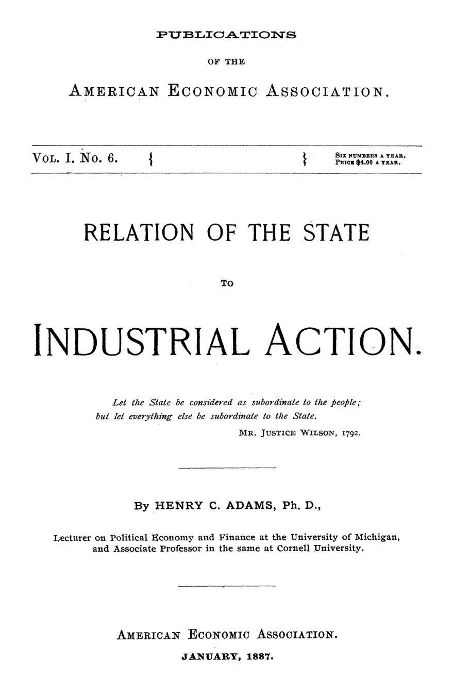

Quem define o piso da concorrência? Adams contra o laissez-faire
Leitura: 7 min
Em 1887, Henry C. Adams desmonta a lógica do laissez-faire, defende que a lei eleve o piso da concorrência e separa os setores em que o monopólio é inevitável — e deve ser público ou regulado.


Em 1880, uma comissão especial da Assembleia de Nova York contou os elevadores de grãos de Buffalo: eram 34, quando 12 bastavam para o serviço. Os demais não precisavam funcionar para ganhar dinheiro. Todos recebiam sua parte da receita por meio de um pool, o acordo de rateio entre concorrentes. Um deles, registrou o relatório, estava parado havia vinte anos; vários tinham sido erguidos só para entrar na divisão.
O caso abre o ataque de Henry C. Adams, professor em Michigan e em Cornell, ao laissez-faire, publicado pela American Economic Association em janeiro de 1887. Outro desperdício: uma associação de fabricantes de papel de parede pagava US$ 25 mil por ano ao dono de uma fábrica em Long Island para mantê-la fechada.
As construtoras ferroviárias, diz Adams, ergueram nos Estados Unidos o dobro da malha de que o país precisava — e lucraram. O interesse privado pode prosperar destruindo valor social.
O alvo declarado é Spencer, que em The Man versus the State listara leis do Parlamento sobre a indústria como invasões da liberdade pessoal. Adams concede muito. Legislação ignorante é legislação criminosa, e subsídios à renda do trabalhador derrubam salários, como mostraram as leis inglesas de assistência aos pobres. Mas recusa a conclusão: mesmo que o governo seja fraco e dócil a interesses privados, o sábio não deve enfraquecê-lo ainda mais. O clamor por mais governo será atendido de todo modo; resta dirigir a expansão.
Onde falha a lógica do laissez-faire?
Adams toma a formulação de Cairnes e a converte em silogismo. Premissa maior: os interesses humanos são, no fundo, os mesmos. Premissa menor: cada um conhece o próprio interesse e, deixado livre, o segue. Conclusão: a melhor ordem social nasce da liberdade irrestrita. O erro é elementar: interesse muda de sentido no caminho. Na maior, é o interesse último; na menor, o imediato. E os homens sacrificam o remoto ao presente até nos assuntos pessoais.
A versão moderada, de Cairnes e Mill, trata o laissez-faire como regra prática com presunção a seu favor. Adams não se satisfaz: corrigida a premissa, perdeu-se a força do argumento, e a economia inglesa desceu de ciência fundada num princípio a filosofia fundada numa máxima. O que resta da presunção é conservadorismo, a autoridade de qualquer fato estabelecido. Na Alemanha, a presunção corre no sentido oposto, a favor do Estado: cada povo presume em favor do arranjo que conhece. O erro inglês é ver o Estado como mal necessário; o alemão, como organismo completo em si. A unidade de análise, diz Adams, é a sociedade.
Quais são os três males da concorrência sem freio?
O primeiro: a livre disputa rebaixa a moral de um ramo ao nível do pior concorrente capaz de nele sobreviver. O segundo: a regra da não intervenção impede a sociedade de colher os benefícios do monopólio onde ele é natural. O terceiro: o governo confinado ao mínimo fica fraco, e o fraco logo se corrompe, convidando as empresas a capturá-lo.
A ilustração do primeiro é quase aritmética. Suponha dez fabricantes de algodão, nove deles dispostos a poupar mulheres e crianças de jornadas longas. Basta o décimo, que mede o sucesso só pela taxa de lucro, para que os outros sejam forçados a imitá-lo: os produtos competem, e o comprador não pergunta como foram feitos. O dono de uma gráfica da Vandewater Street disse a Adams sentir-se impotente diante de quem ditava os salários baixos.
A resposta é a legislação fabril. Quando a maioria de um ramo quer uma regra e poucos a impedem, cabe ao Estado convertê-la em lei. Proibir o trabalho infantil não restringe a concorrência; eleva seu plano ao do trabalho adulto. Muda-se o terreno, não o jogo. Neutralidade não existe: alguém dita o padrão, os melhores ou os piores.
“Nenhum voto é um voto negativo.” (“No vote at all is a negative vote.”)
Quando o monopólio é inevitável?
Adams classifica as indústrias pela resposta do produto a doses adicionais de capital e trabalho. Nas de rendimentos constantes, como o varejo, entrar é fácil, e o lucro de um merceeiro não passa muito do salário de seu primeiro caixeiro. Nas de rendimentos decrescentes, como a agricultura, a concorrência também basta. Não há motivo, diz ele, para o governo plantar.
Nos rendimentos crescentes, ampliar o negócio estabelecido custa menos do que erguer um rival. Na ferrovia, duplicar a linha velha sai mais barato do que construir outra, e a incumbente fica por muito tempo livre de concorrência. Quando surge uma linha paralela, sua meta costuma ser vender-se à antiga: sinal de lucros excessivos, não de concorrência.
“Se é do interesse dos homens combinar, nenhuma lei os fará competir.” (“If it is for the interest of men to combine no law can make them compete.”)
A escolha, portanto, é entre um monopólio irresponsável, à margem da lei, e um monopólio legal, gerido no interesse público. O instrumento fica em aberto: concessões vigiadas, comissões oficiais, concorrência estatal ou gestão direta.
Por que o governo mínimo vira governo corrupto?
Entre 1830 e 1845, os estados americanos construíram ferrovias e canais. A experiência terminou em dívidas, e o eleitorado, irritado com os impostos, emendou as constituições para barrar o Estado da indústria. O espaço ficou com as corporações, que ainda assim viveram de recursos públicos.
O resultado foi simultâneo: corporações poderosas e prefeituras corruptas. Adams inverte o argumento liberal de que o governo é ruim demais para receber novas funções. A fraqueza é efeito, não causa. Uma administração retalhada em conselhos, sem prestígio e mal paga, afasta os capazes e abre caminho ao esperto sem escrúpulos. Na Alemanha, compara, o Estado atrai os talentos: as máquinas de costura são cópias toscas de modelos americanos abandonados, mas as cidades são bem governadas.
“Temos máquinas de costura perfeitíssimas, mas cidades mal administradas.” (“we have very perfect sewing machines, but poorly administered cities.”)
Adams chama sua posição de conservadora: contra a anarquia, individualismo degenerado, e contra o socialismo, revolta contra os efeitos do laissez-faire. Seu teste separa as questões. Relações de trabalho devem ser resolvidas por contrato livre; deixá-las ao Estado seria admitir o essencial do socialismo. Os monopólios, ao contrário, são assunto do Estado, de preferência dos governos locais. Quem quer concentrar tudo no governo federal, adverte, é imperialista, não federalista.
Na minha leitura
Na minha leitura, a contribuição mais duradoura de Adams não é a defesa da intervenção, mas a recusa da presunção. “Na dúvida, mercado” e “na dúvida, Estado” são o mesmo hábito mental com sinais trocados. O critério que ele propõe — examinar a estrutura de custos de cada setor antes de decidir quem o opera — é o que a economia da regulação viria a tratar sob o nome de monopólio natural.
O argumento sobre o governo fraco envelheceu ainda melhor. Um Estado proibido de fazer, mal pago e fragmentado não fica neutro; fica capturável. A pergunta que Adams deixa é permanente: o desenho das instituições atrai para a função pública gente capaz de enfrentar os interesses que ela deve regular?
Glossário
- Laissez-faire
- Doutrina que restringe o governo à proteção de pessoas e propriedade contra força e fraude, na definição citada de Mill.
- Plano da concorrência
- Conjunto de condições (morais, trabalhistas) sob as quais a disputa ocorre; a lei pode elevá-lo sem suprimir a concorrência.
- Rendimentos crescentes
- Situação em que mais capital e trabalho geram aumento mais que proporcional do produto, favorecendo o negócio já instalado.
- Financiamento público e privado
- Na terminologia de Adams, a regra de preço igual ao custo (Estado) versus o maior preço que não reduza o negócio lucrativo (empresa).
- Pool
- Acordo entre concorrentes para dividir receitas ou mercado, em vez de disputá-los.
Fontes
- Relation of the State to Industrial Action (pp. 7–85). JSTOR · Internet Archive (PDF)
- Sumário da edição no JSTOR: Publications of the American Economic Association, vol. 1, nº 6.
Documento em domínio público (EUA, publicado antes de 1931), via JSTOR Early Journal Content e Internet Archive. Resumo e comentário do autor deste site, sem afiliação com a American Economic Association. Encontrou um erro? Escreva: a correção é publicada no próprio texto, com data.
← Nº 4 · Sabão, chá e governança: por que as cooperativas quebravam Nº 6 · A patologia da cooperação: fazendeiros, operários e mórmons →